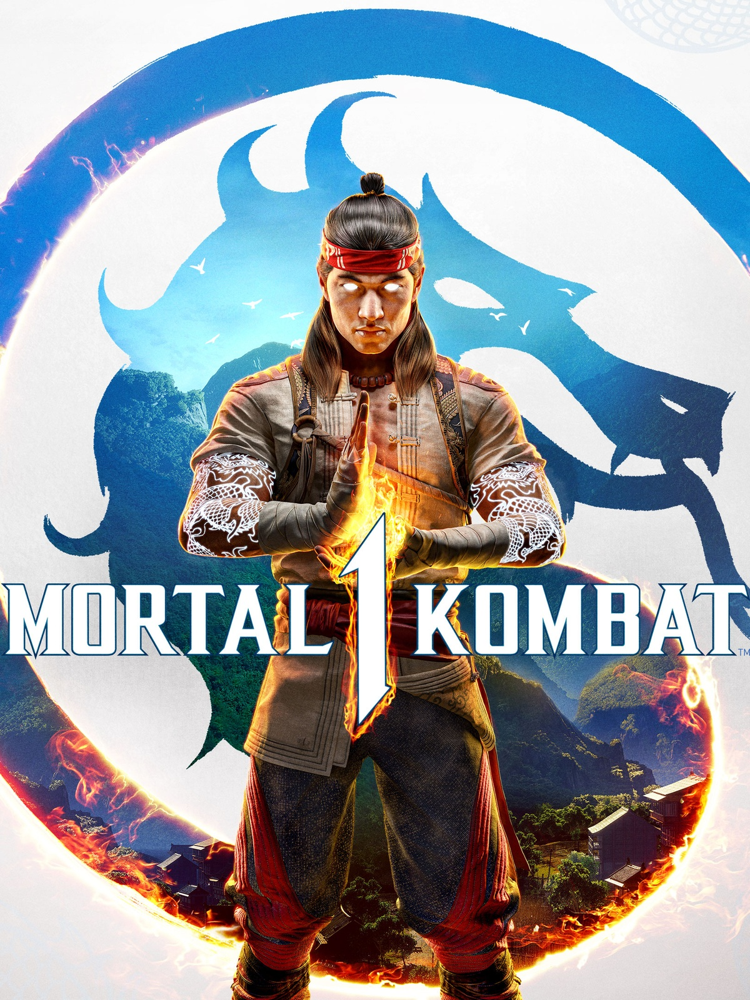
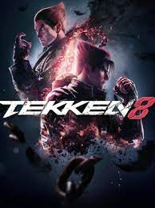
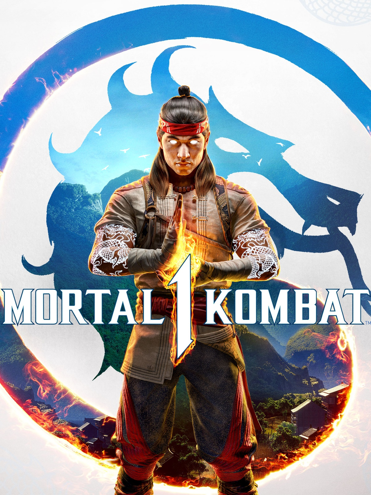
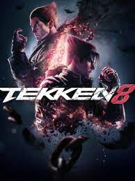

Toimintapelit
Toimintapelit on jaettu kahteen osaan tappelu- ja ampumispeleihin.
Molemmissa genreissä on toimintaa, mutta kummassakin on erilaiset tyylinsä.
Tappelupelit
Tappelupeleissä on yleensä 2 pelaajaa, jotka tappelevat toisiaan valitsemallaan hahmolla.
Tappelupelit on myös jaettu 2D- ja 3D-tappelupeleihin.
Tunnettuja tappelupelejä on Street Fighter, Mortal Kombat ja Tekken.
 



Ampumispelit
Ampumispelit on selkeetä ymmärtää.
Siinä on aseita joilla ammutaan toisia pelaajia tai pelin tehtyjä vihollisia.
Ampumispelit voi olla ensimmäisen persoonassa tai kolmannessa persoonassa.
Tunnettuja ampumispelejä on Call of Duty, Counter-Strike: Global Offensive ja Apex Legends.


Roolipelit
Roolipelit eli RPG-pelit, joissa on hahmoja, joiden taidot tai ominaisuudet kehittyvät pelin edetessä.
Roolipelit voivat olla joko vakavampia, joissa tarinoiden pääpaino on ongelmien ratkaisussa ja juonen edistämisessä,
tai nopeatempoisempia taistelupelejä.
Tunnettuja RPG-pelejä on Skyrim, Elden Ring ja Cyberpunk 2077.


Lisää pelejä
- Final Fantasy
- Genshin Impact
- Baldur's gate 3
Semanttiset elementit
3 syytä käyttää HTML-koodin semattisia elementtejä.
- Koodin luotettavuus
- Näkyy hakutuloksessa